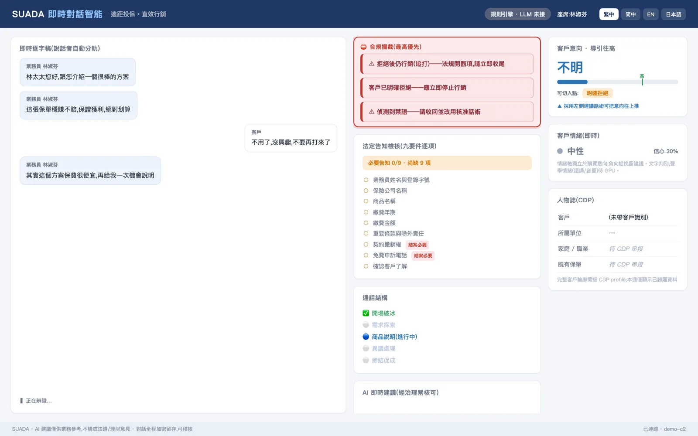
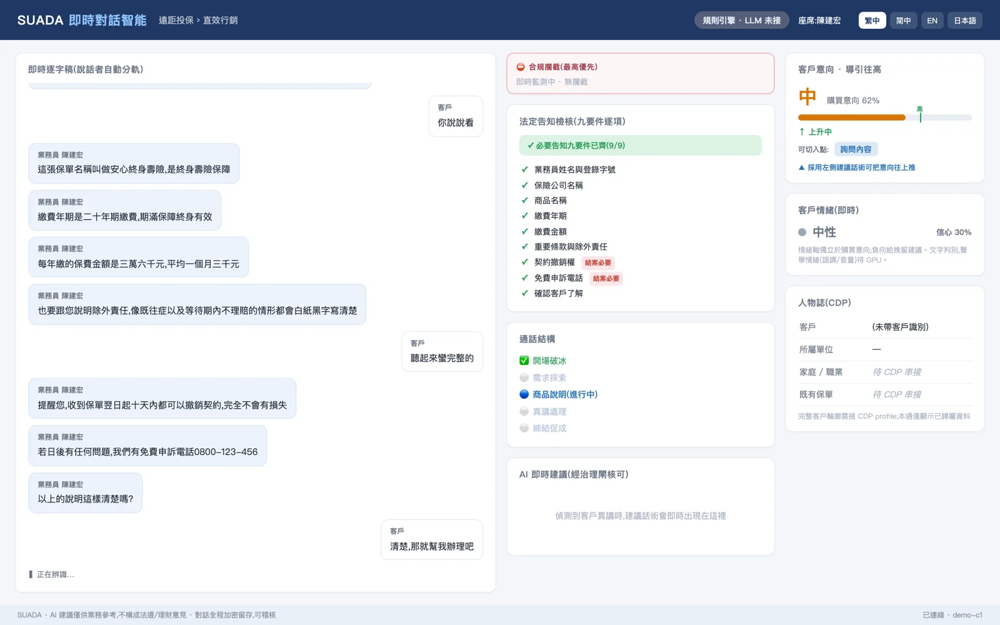
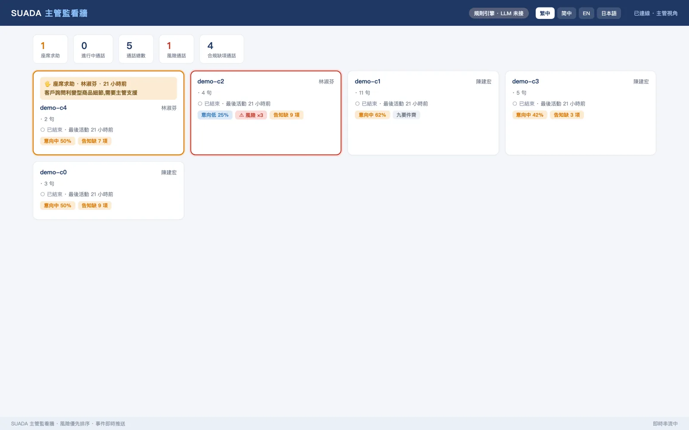
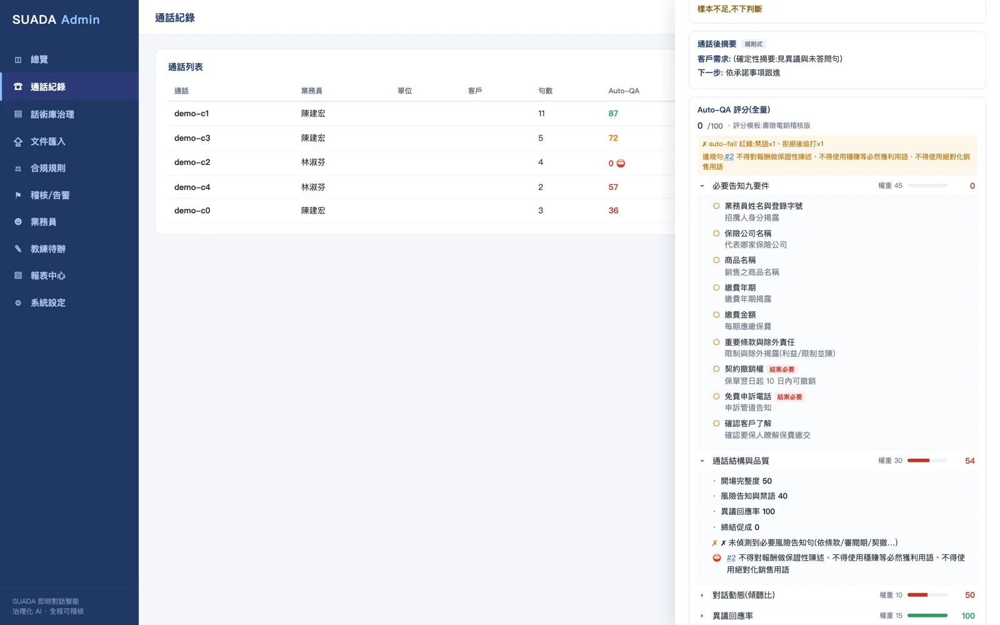
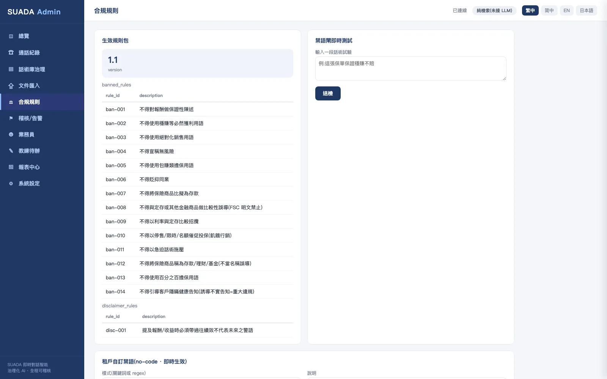
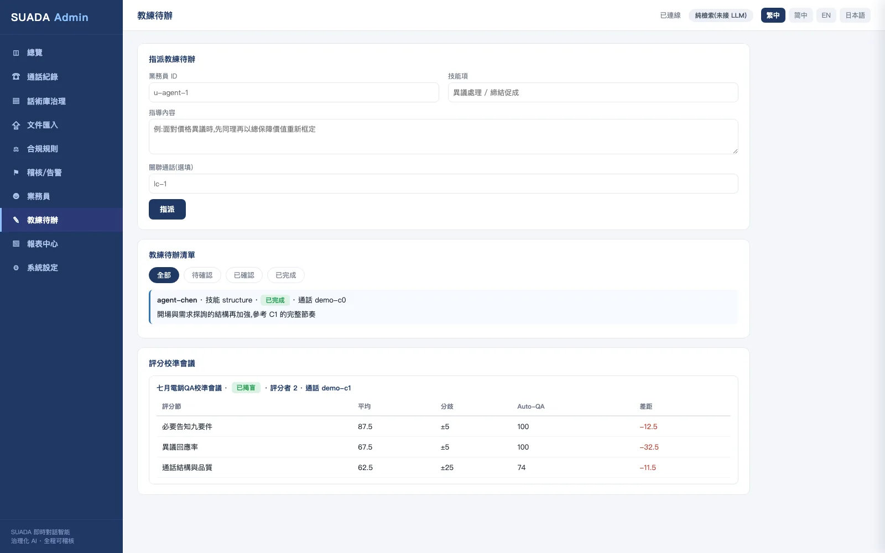
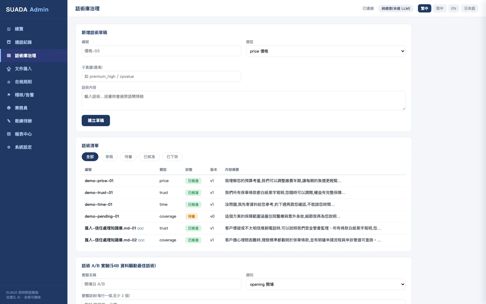

DEFINITION
人工稽核只能抽聽少數通話。用 AI 分析每一通通話，可以把告知是否完整、有沒有不當用語、客戶提出哪些異議，整理成可以追蹤的紀錄，再交給品管人員確認。
SUADA 是奧洛（Aurobase）以 AURO NEXUS 平台組成的電話與視訊銷售對話智能方案。它辨識客戶的意向、異議與情緒並提示業務員回應話術，依〈保險業保險代理人公司保險經紀人公司辦理電話行銷業務應注意事項〉逐項檢核告知與紀錄要件，以確定性規則擋下不當用語，並依評分表為每一通通話評分，稽核紀錄寫入雜湊鏈。
THE PROBLEM
品管人力有限，只能抽聽少數通話，多數通話沒有人聽過。
法定告知有沒有講完整，常在客訴或稽核時才回頭查。
哪些回應方式能化解異議，缺少數據佐證，教練只能憑經驗。
CAPABILITIES
PLATFORM SCREENS
以下畫面擷取自展示環境，人物與通話內容皆為虛構；畫面上的提示由規則引擎產生。







REGULATORY MAPPING
下表列出與 SUADA 功能直接相關的規範與對應做法。
| 規範 | SUADA 的對應做法 |
|---|---|
| 電話行銷應注意事項：告知與紀錄要件 | 業務員語句逐項比對告知要件，缺漏的項目列在通話紀錄中，供品管人員複核。 |
| 金融業運用 AI 指引：治理及問責 | AI 評審只作參考、不改變總分；話術須經核准才會提示給業務員。 |
資料來源：全國法規資料庫；金管會〈金融業運用人工智慧（AI）指引〉（2024 年 6 月 20 日發布）。「電話行銷應注意事項」指〈保險業保險代理人公司保險經紀人公司辦理電話行銷業務應注意事項〉。本表列出的是對應做法，是否符合規範由主管機關與貴公司法遵認定。六章重點與控制清單見金融業運用 AI 指引怎麼落實。
WHAT'S DIFFERENT
禁語閘門用確定性規則比對，結果可解釋、可重現。
AI 的評分意見只作參考，總分依評分表計算，品管人員有最後決定權。
告知檢核規則每次調整都升版，事後查得到某一通通話是用哪一版規則判定。
ON THE PLATFORM
DEPLOYMENT
以容器交付，可部署於公有雲的台灣區域或企業自有機房；語音辨識引擎、電話系統介接、告知規則與評分表，依貴公司的通路與商品客製。
以 Helm chart 部署於公有雲的台灣區域（例如 Google Cloud 台灣區域）。
部署於企業自有機房，AI 呼叫經 Forge 治理，可限定只用地端模型。
依貴公司的電話系統、商品類型與內部規範，規劃語音介接、告知規則與評分表。
BEFORE YOU START
以下事項會在導入前，依貴機構的環境與需求逐項確認。
語音辨識引擎的選用，以及與既有電話系統（錄音或即時串流）的介接，在導入時依案場規劃與驗證。
品質評分與告知檢核協助品管人員發現問題，最後判定由品管與法遵人員確認。
由語音判讀情緒需在 GPU 環境部署；文字情緒不需 GPU。
FAQ
不會。系統分析每一通通話並列出告知缺漏、不當用語與評分，AI 評審只作參考、不改變總分；最後判定由品管與法遵人員確認。
依〈保險業保險代理人公司保險經紀人公司辦理電話行銷業務應注意事項〉的要件，逐句比對業務員語句；規則有版本，事後查得到當時採用哪一版。
禁語閘門用確定性規則比對業務員語句，不依賴 AI 判斷；全形字、插入空白等變體也擋得住，結果可解釋、可重現。
可以。以容器交付，可部署於企業自有機房或公有雲的台灣區域，AI 呼叫經 Forge 治理並可限定只用地端模型。